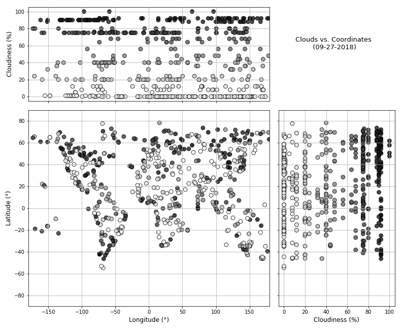
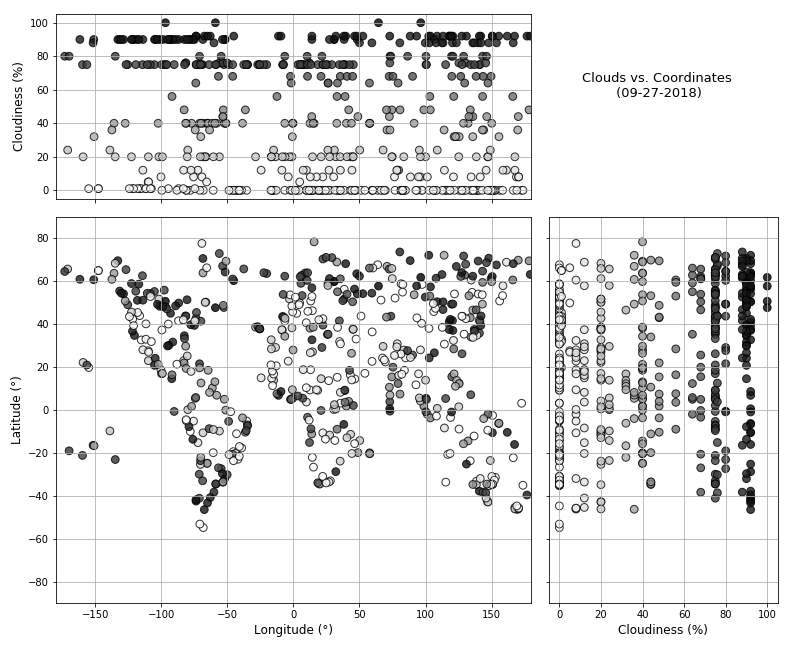

The purpose of the project was to analyze how weather changes as you get closer to the equator and if trends can be observed on the positions of cities on the globe. To accomplish this analysis, we builded a set of ramdom coordinates, identified the related cities and pulled weather data from the OpenWeatherMap API.
After assembling the dataset, we used Matplotlib to display various aspects of the weather vs. global coordinates, latitude and longitude. Factor we looked at included:
This site provides the source data and visualizations created as part of the analysis, as well as description of any trends and correlation witnessed.


 
